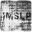
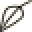

I’m a linguist, I reverse-engineer language.
My pages on Academia.edu and the Linguist List;
my curriculum vitæ.
GitHub: repositories of source code, LaTeX documents, etc.
Diaspora*: a distributed libre privacy-aware open source social network.

Facebook: a centralized proprietary privacy-violating closed source social network.
Ravelry: yarn + hook = ♥
Stack Exchange: Q? A!
The Session: the best source for Irish folk music scores.

IMSLP: the best source for classical music scores.
BOINC: contribute to distributed computing + heat your home during wintertime.
BookCrossing: set books free.
.share: $HOME is where your dotfiles are.
Vim: Vim is the greatest editor since the stone chisel. — Jose Unpingco


Beofen Tivʾi: an online community of unschoolers. [he]
Tapuz: Internet forums. [he]